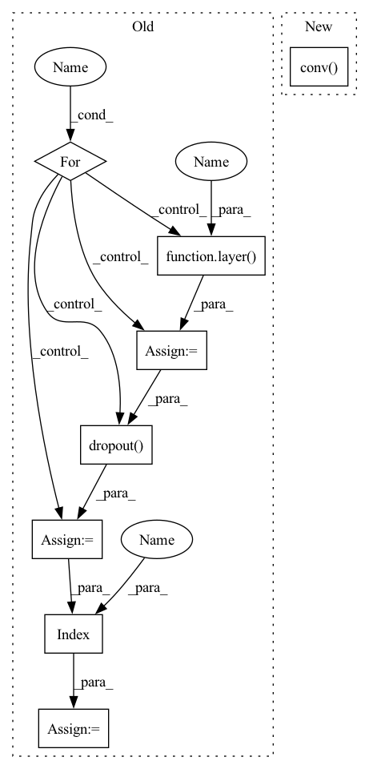

Pattern ID :34500

Before Change
metrics=[Accuracy()])
def forward(self, x, g):
for layer in self.layers[:-1]:
x = layer(g, x).flatten(1)
x = self.dropout(x)
x = self.layers[-1](g, x).mean(1)
return x
After Change
metrics=[Accuracy()])
def forward(self, x, g):
x = self.conv(g, x).mean(1)
return x
In pattern: SUPERPATTERN
Frequency: 3
Non-data size: 8
Instances
Fragment ID: 99252925
Project Name: edisonleeeee/graphgallery
Commit Name: 4a0b252917d5068be1fc68f2752b58b6119c3a21
Time: 2021-02-09
Author: cnljt@outlook.com
File Name: graphgallery/nn/models/dgl_torch/gat.py
M Class Name: GAT
N Class Name: GAT
M Method Name: forward(3)
N Method Name: forward(3)
M Parent Class: TorchKeras
N Parent Class: TorchKeras
M File Name: graphgallery/nn/models/dgl_torch/gat.py
N File Name: graphgallery/nn/models/dgl_torch/gat.py
M Start Line: 59
M End Line: 63
N Start Line: 53
N End Line: 53
'>
Before Change
def forward(self, x, edge_index, edge_weight=None):
for layer, act in zip(self.layers, self.act_fns):
x = act(layer(x, edge_index, edge_weight))
x = self.dropout(x)
x = self.layers[-1](x, edge_index, edge_weight)
return x
After Change
metrics=[Accuracy()])
def forward(self, x, edge_index, edge_weight=None):
return self.conv(x, edge_index, edge_weight)
'>
Fragment ID: 99252930
Project Name: edisonleeeee/graphgallery
Commit Name: 4a0b252917d5068be1fc68f2752b58b6119c3a21
Time: 2021-02-09
Author: cnljt@outlook.com
File Name: graphgallery/nn/models/pyg/gcn.py
M Class Name: GCN
N Class Name: GCN
M Method Name: forward(4)
N Method Name: forward(4)
M Parent Class: TorchKeras
N Parent Class: TorchKeras
M File Name: graphgallery/nn/models/pyg/gcn.py
N File Name: graphgallery/nn/models/pyg/gcn.py
M Start Line: 61
M End Line: 66
N Start Line: 50
N End Line: 50
'>
Before Change
def forward(self, x, edge_index, edge_weight=None):
x = self.dropout(x)
for layer, act in zip(self.layers, self.act_fns):
x = act(layer(x, edge_index))
x = self.dropout(x)
x = self.layers[-1](x, edge_index)
return x
After Change
metrics=[Accuracy()])
def forward(self, x, edge_index, edge_weight=None):
return self.conv(x, edge_index)
'>
Fragment ID: 99252928
Project Name: edisonleeeee/graphgallery
Commit Name: 4a0b252917d5068be1fc68f2752b58b6119c3a21
Time: 2021-02-09
Author: cnljt@outlook.com
File Name: graphgallery/nn/models/pyg/gat.py
M Class Name: GAT
N Class Name: GAT
M Method Name: forward(4)
N Method Name: forward(4)
M Parent Class: TorchKeras
N Parent Class: TorchKeras
M File Name: graphgallery/nn/models/pyg/gat.py
N File Name: graphgallery/nn/models/pyg/gat.py
M Start Line: 64
M End Line: 71
N Start Line: 54
N End Line: 54